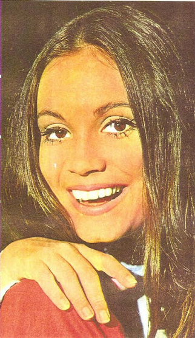

Bráulio Pedroso disseca o Esquadrão da Morte
Porque o nosso mar tem muito mais milhas
Começamos a torcer para a Maxicopa-72
Juca Chaves repórter entrevista Juca Chaves Artista
Regina Duarte "na capa" diz porque canta

BRASÍLIA, 24 DE JUNHO DE 1971 - NÚMERO 547 - ANO 71 - CRS 2.59